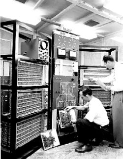
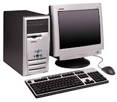

É com essa instigante indagação que o matemático Alan Turing inicia o trabalho Computing Machinery and Intelligence (Máquinas Computacionais e Inteligência, em tradução livre), escrito por ele em 1950. Turing defende a criação de um teste hipotético para analisar se um sistema computacional é ou não inteligente como um ser humano, conhecido popularmente como Teste de Turing.
Mas, antes de tentar responder a esse pensamento mirabolante do pai da ciência da computação, vamos entender um jogo que o próprio Turing propõe — O Jogo da Imitação.

O Jogo da Imitação
Suponhamos que haja três jogadores:
Jogador A, um homem;
Jogador B, uma mulher;
Jogador C, o interrogador, que pode ser de qualquer gênero.
Vamos agora aos objetivos:
O interrogador ( C ) deve, por meio de perguntas, descobrir quem é o homem e quem é a mulher, já que não pode vê-los e não sabe quem é quem;
O homem ( A ) deve tentar fingir que é a mulher, dando respostas falsas para enganar o interrogador;
A mulher ( B ) deve dar respostas verdadeiras que indicam que ela é de fato a mulher, tentando assim ajudar o interrogador;

É preciso que a forma de comunicação utilizada não dê qualquer indicação de gênero (como o uso da voz). Pode ser utilizada, por exemplo, uma máquina de escrever para redigir as respostas.
Interessante, não? Um homem deve ser capaz de imitar o comportamento e as respostas de uma mulher, e o contrário também seria possível.
Voltemos, então, à pergunta feita por Turing.
As másquinas conseguem pensar?
O computador, tal qual conhecemos hoje, passou por diversas transformações e foi se aperfeiçoando ao longo do tempo, acompanhando o avanço das áreas da matemática, engenharia, eletrônica. É por isso que não existe somente um inventor.
De acordo com os sistemas e ferramentas utilizados, a história da computação está dividida em quatro períodos.
Primeira Geração (1951-1959):
Os computadores de primeira geração funcionavam por meio de circuitos e válvulas eletrônicas. Possuíam o uso restrito, além de serem imensos e consumirem muita energia.
Um exemplo é o ENIAC (Eletronic Numerical Integrator and Computer) que consumia cerca de 200 quilowatts e possuía 19.000 válvulas.

Segunda Geração (1959-1965):
Ainda com dimensões muito grandes, os computadores da segunda geração funcionavam por meio de transistores, os quais substituíram as válvulas que eram maiores e mais lentas. Nesse período já começam a se espalhar o uso comercial.

Terceira Geração (1965-1975):
Os computadores da terceira geração funcionavam por circuitos integrados. Esses substituíram os transistores e já apresentavam uma dimensão menor e maior capacidade de processamento.
Foi nesse período que os chips foram criados e a utilização de computadores pessoais começou.

Quarta Geração (1975-até os dias atuais):
Com o desenvolvimento da tecnologia da informação, os computadores diminuem de tamanho, aumentam a velocidade e capacidade de processamento de dados. São incluídos os microprocessadores com gasto cada vez menor de energia.
Nesse período, mais precisamente a partir da década de 90, há uma grande expansão dos computadores pessoais.

Além disso, surgem os softwares integrados e a partir da virada do milênio, começam a surgir os computadores de mão. Ou seja, os smartphones, iPod, iPad e tablets, que incluem conexão móvel com navegação na web.
Um ponto de destaque é que a evolução dos computadores ocorria de maneira mais lenta. Com o desenvolvimento da sociedade, meios de comunicação e a divulgação científica podemos ver a evolução dessas máquinas em dias ou meses.
Alguns estudiosos preferem acrescentar a “Quinta Geração de Computadores” com o aparecimento dos supercomputadores, utilizados por grandes corporações como a NASA.
Nessa geração, é possível avaliar a evolução da tecnologia multimídia, da robótica e da internet.
Vídeo sobre o tema:
Escrito por:
Thiago Souza: Professor de Sociologia, Filosofia e HistóriaMais conteúdos sobre o tema: